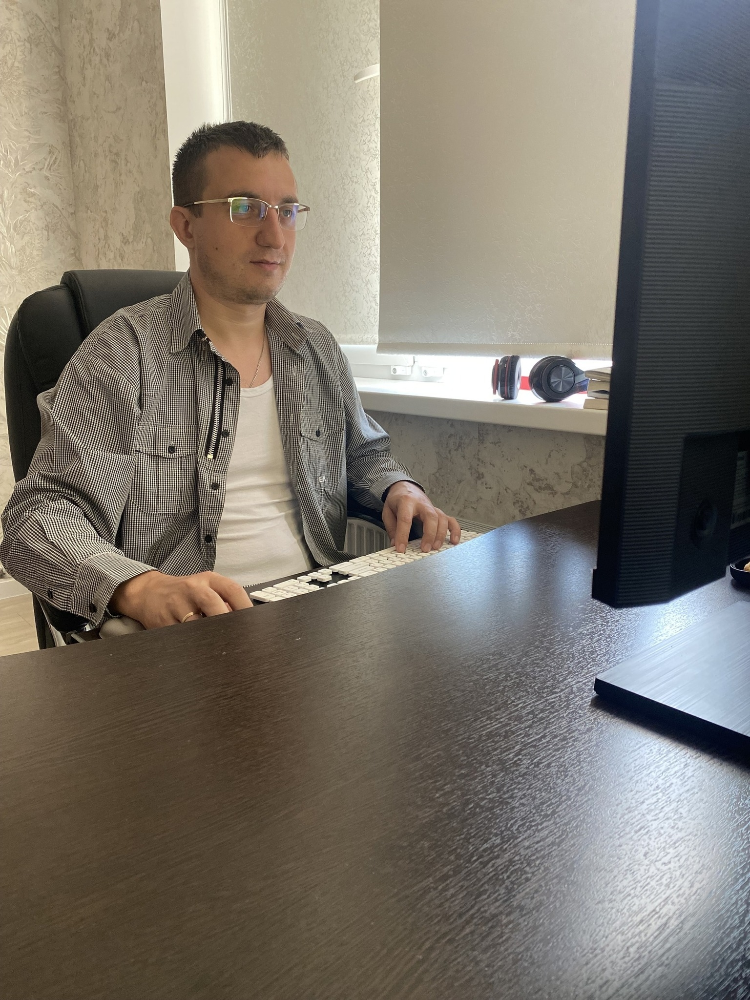

Меня зовут Лой Александр Михайлович! Люблю заниматься версткой, вебом, сайтами. Сюда же входит и программирование js, php и прочее.

Имею высшее образование в строительстве. Вообще, нравится работать с пространственными элементами, будь то графика, перспектива, чертежи. Отсюда и желание работать в вебе с векторной графикой, 3д и прочими вещами. К этому занятию пришел, пройдя долгий путь в любительской разработке, создавая проекты и сайты на народ.ру, юкоз и блогспот. Будучи мастером и инженером-конструктором, параллельно с основной работой, занимался созданием корпоративных сайтов, их обновлением и продвижением.
Люблю заниматься рутинной и интересной работой, ставить цели и выполнять их в срок.
Технологии
- HTML, CSS, Javascript (ES6, ES7).
- Работаю с Wordpress, UCOZ, блогспот.
- Имею опыт создания сайтов на cPanel.
- Адаптивные сайты по шаблонам PSD, Figma.
- БЭМ.
- Люблю работать с графикой, картинками в SVG, знаю основы дизайна и разработки сайтов.
- Работаю с Github, с событиями js, конструктором. Немного в React js и PHP.
- Работаю в препроцессорах SASS/SCSS.
- Знаю и люблю CSS. Работаю с анимацией, трансформацией и прочими вещами. Знаю как ранжируются элементы на странице, могу уменьшить скорость загрузки сайта.
- Работаю с контекстом наложения, могу сделать 3д элементы на чистом CSS.
- Дополнительно изучил CAD-системы, такие как KOMPAS, Autocad, Inventor, которые помогут в создании SVG-изображений.
Люблю работать с переменными, параметризацией. Умею создавать качественные резиновые сайты для различных устройств.
Вдобавок ко всему вышеописанному имею многолетний опыт в SEO-продвижении проектов, который поможет раскрутить ресурс в интернете с минимальным или нулевым бюджетом. Благодарю за внимание.